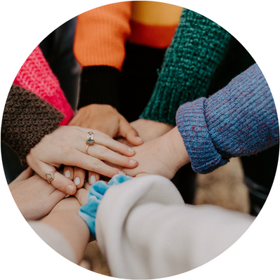

CyclaRunt, a Swedish company, pioneers shared bike rentals for university students across Sweden, promoting sustainable and convenient transportation options to enhance campus mobility.
In 2021, CyclaRunt was established by a group of visionary graduates from Lund University who recognized the pressing need for sustainable and accessible transportation options on university campuses. Since its inception, this Swedish-born initiative has rapidly expanded its reach, strategically placing bikes on every one of the 36 university campuses across the country. Rooted in the founders' commitment to environmental consciousness and seamless campus mobility, CyclaRunt has become a trailblazer in shared bike rentals, fostering a greener, healthier, and more interconnected university experience for students nationwide.
Meticulously engineered for user-friendliness, these bicycles feature state-of-the-art components such as intuitive electronic locking systems, ergonomic designs, and robust yet lightweight frames, ensuring an effortless and seamless riding experience for students. Through a careful integration of cutting-edge technology and ergonomic considerations, CyclaRunt has set the standard for accessibility and ease of use in shared bike rentals.

240 employees
In the vibrant world of CyclaRunt, our team of 240 dedicated individuals pedal their way into the heart of sustainable mobility. From the tech-savvy enthusiasts who keep our electronic locking systems ticking to the tireless bike technicians ensuring our fleet glides smoothly, each member is a vital spoke in our collective wheel of success. Our customer support heroes guide riders with a smile, while the marketing mavens spin tales of two-wheeled adventures. With a shared passion for making campus commuting a breeze, our 240-strong family embodies the spirit of fun, camaraderie, and a whole lot of pedal-powered enthusiasm!